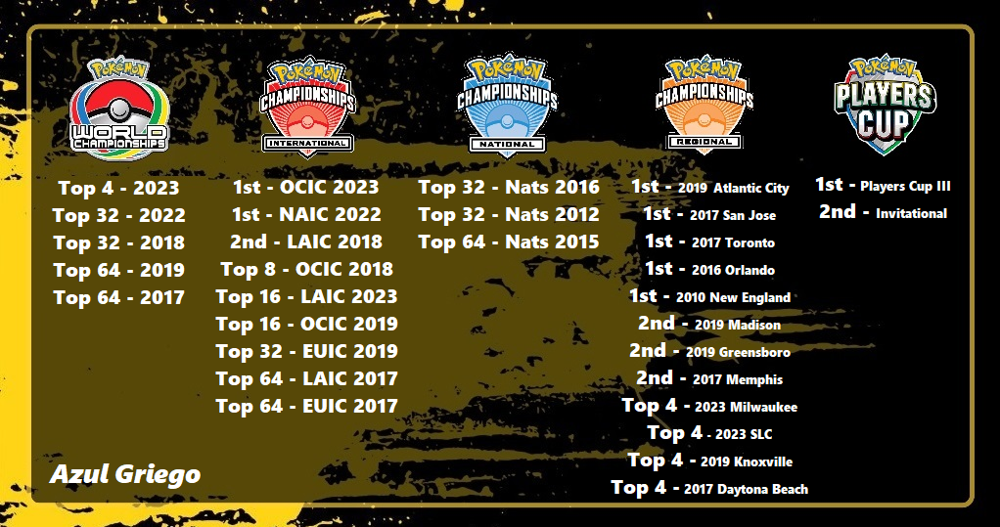
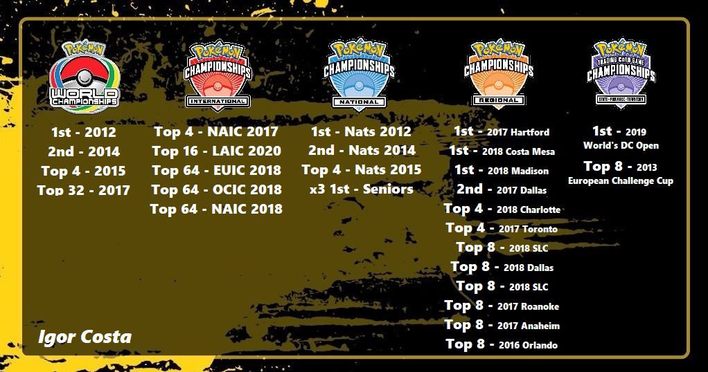
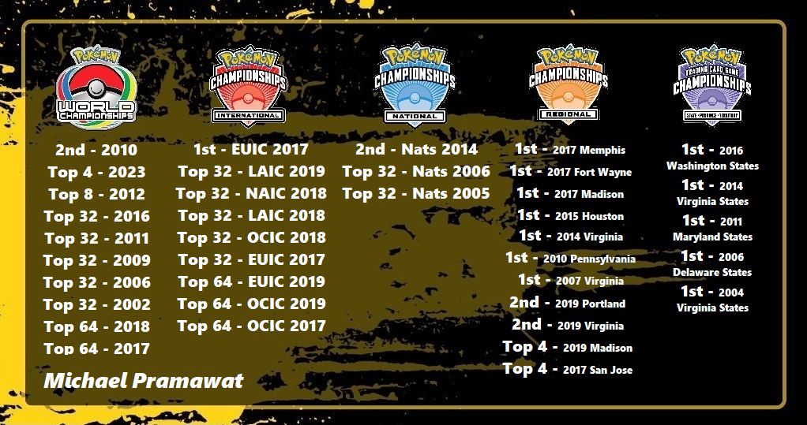
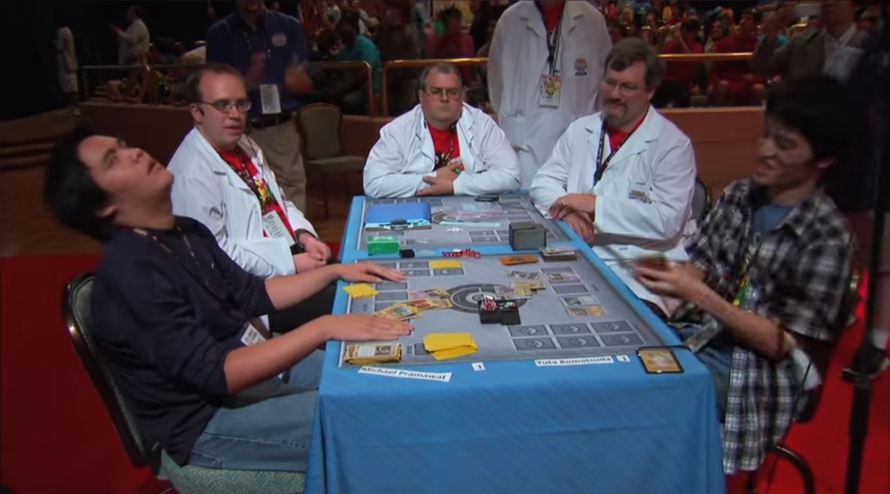
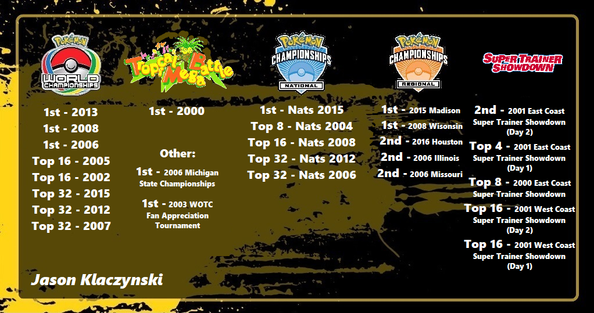
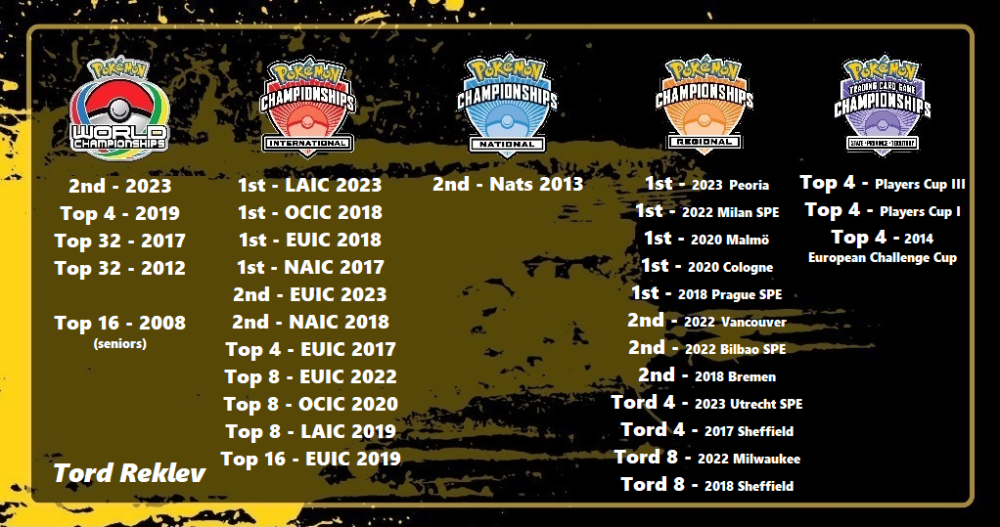
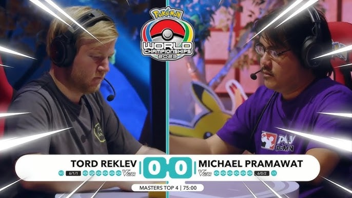

Quite often, I hear players arguing over who the best player in the world is, and I mean, often... Local events, messenger chats, friends at work, and on social media. This has always been a hot topic throughout the game's lifetime, but never more so than throughout the last few years. I recently indulged in one of these conversations with friends after the conculsion of the 2023 World Championships, and really started thinking hard on who I believe to be the five best players of all time.
As a reminder before we delve too deep into this, these rankings are of my opinion. You do not have to agree with me, however I do hope that some of the points and information I include in this article are useful when you are thinking of your own Top "x " list. (NOTE: I am leaving players from the Asia-Pacific region out of this list's consideration. With the vastly different and secluded circuit they compete in, it's incredibly difficult to compare accomplishments to the Play! Pokémon structure that we're more familiar with. I can think of so many players from this region that are among some of the best players of all time, ex. Takuya Yoneda, Shintaro Ito, Tsuguyoshi Yamato, Yuta Komatsuda, Sejun Park, Ryota Ishiyama, Daichi Shimada and so many more. But, without knowing what other accomplishments these players have had in their own circuits outside of the World Championships, it's very difficult for me to include them in my Top 5 list.) With that out of the way, let's get into it.
The Top 5 Greatest Players in History! From 5th to 1st:
5. Azul Griego
@Azul_GGFresh off of a Top 4 finish at the 2023 World Championships, Azul is one of the strongest players this game has ever seen, and we are actively watching him continue to grow as one of the best players of all time!
I know that this choice may already turn some of you retro heads away, given that most of his accomplishments are more recent, but hear me out. Azul has been playing the game for more than thirteen years and has not only made a name for himself as one of, if not the, top content creators in the game. But he won the very first Regionals he attended in 2010! He was destined to be a Champion from the beginning.
It took a few years afterwards for Azul to find his stride, but once he did, he has only continued to snowball into what I think, is the 5th best player in the game's history.
Let's take a look at just some of Azul's most notable accomplishments:
Again, that's just some of Azul's accomplishments... too many to add to the graphic above, a running theme you'll notice throughout this article.
He is most known as a two-time International Champion and five-time Regional Champion. But as you can see above, he made finals at another Internationals event and finals of three other Regionals. Only two other players have also won two Internationals each respectively, Gustavo Wada and Stéphane Ivanoff, and like Azul, Stéphane also made finals at a third Internationals. (Obviously not counting Tord Reklev, but we'll get to him later.) Both could be argued by some to have the same amount of, if not more accolades than Azul, like Gustavo winning the 2011 World Championships in the Junior Division. But, it's hard to ignore the amount of Regionals Azul has taken down in the US. Unfortunately for both Gustavo and Stéphane, the EU and LATAM regions have never had as many Regionals nor Special Events as in the US, esspecially LATAM. It's quite possible that either would have more Regional/SPE titles on their records if so. But, this is not a what-if list based on geography.
Prior to this year's World Championships, while close, I honestly don't think Azul would have been on my top 5 list. But after his Top 4 finish in Yokohama, and only having been just a knock out away from making finals, Azul is who I believe, to now be the 5th best player in the history of Pokémon! And trust me when I say that we have not seen the last of him yet.
4. Igor Costa
@IgorDolbethIgor has more or less stepped away from the game in the last few years, but him having stopped traveling to events outside of New England does not take him out of consideration as one of the greatest players in the history of the game.
Before we look at his accomplishments, what if I told you that Igor made Top 4 at not one, not two, but three Worlds, AND nearly back to back... to back! That's almost as hard to believe as Jason Klaczynski having won three Worlds... but obviously not at all on the same level.
Igor is also one of very few players who have moved to the US from his home country of Portugal. Meaning his accomplishments spanned different countries throughout the years. Which is really cool to think about.
Let's take a look at some of Igor's most well-known accomplishments:
(Note: The purple "States" logo is simply being used here as an "other" category of sorts)
Igor is the 2012 World Champion, winning the event shortly after winning his country's National Championships. By winning worlds, he of course earned an automatic invitation to the 2013 World Championships, but dropped from the event before the final round of swiss. But, Igor came back with vengeance, making finals again in the 2014 World Championships! Though he lost in the finals to Andrew Estrada in the Virizion Genesect mirror match, he made history by making Top 4 at the 2015 Worlds Championships the following year!
Very few players in the history of the game have made Top 8 at Worlds multiple times, but in the short amount of time in which Igor pulled it off is historic. After moving to the US around 2016, Igor began to dominate the North American circuit by winning three Regionals, making finals in a fourth, and making Top 8 in eight other Regionals! Not to mention his consistent placing at International events, and nearly winning one. For some time, he was arguably the best player in the world, that was actively playing at the time.
I have a friend who likes to argue with me that this spot should go to Shintaro Ito. As Shintaro is the only other World Champion to have made finals at Worlds more than once. (Not counting Jason Klaczynski of course.) Shintaro won the 2016 World Championships with the famous Mega Audino deck, and made finals again in the 2019 World Championships. While amazing accomplishments that 100% put Shintaro Ito in a place to be considered as one of the greatest players of all time, it's the fact that Igor also has an additional Top 4 placement over Shintaro that I believe gives Igor the obvious edge here. Now, like I mentioned earlier in this article, it's very difficult to know what other accomplishments Japanese players may have. I've tried to research farther than what Shintaro's Limitless page lists, but with no luck. None the less, with Igor's Regional accomplishments, I'm incredibly confident in believing that he is the fourth greatest player of all time.
3. Michael Pramawat
@MichaelPramawatPopularly know by his nickname, "Pram", Michael Pramawat is the most "winning-est" Regional Champion in American history. Which kind of makes sense when you look at just how long he's been playing the game. I'll give you a hint, it rhymes with "since the beginning".
As one of the few remaining players known for having played the game for practially all of Pokémon's existence, Michael Pramawat is one of the most legendary players of all time!
As mentioned above, he made a name for himself after taking down Regionals title after Regionals title beginning in the mid-2000's. He was one of the most feared players in the game, and still is to this day. But prior to this year's 2023 World Championships, in which Pram finished 3rd Place, his third time making Top 8 at Worlds, some newer players who began playing after covid may not have heard of him.
Let's get to know him by taking a look at his incredible accomplishments from throughout the years:
You saw it right, Pram is a seven-time Regional Champion! Crazy enough, there's a couple of players that have come close to that number, but for now, Pram stands out on top of the rest. But Pram is not on my list because of his Regional accomplishments alone, it's of course due to his other accomplishments.
Michael Pramawat won the first ever Internationals event that occured in the 2017 season, in London. There, he defeated Jake Lesage, the Senior division 2010 World Champion. Which was kind of ironic, as Michael made finals in the 2010 World Championships as well, but in the Masters division. The 2010 World Championship finals is one of the most iconic matches in the history of the game. Pictured below is the moment that Pram was defeated by his Luxray wielding opponent, a match that was seemingly going his way, until a final top deck ended Pram's 2010 World's run.
Personally, it was one of the most crushing moments in history, as Michael is one of the most deserving players in the game to get that World's title. (Not to take away from Yuta Komatsuda's victory!) It wasn't his last opportunity at winning Worlds however, as he had made Top 8 again just two years later, and even made finals of the 2014 US National Championships two years after that.
He had what felt to be a dry spell for nearly two years after sanctioned events picked back up after covid. And until this year's Worlds, it's hard to think that I would have had him in spot number three on my list. But after his Top 4 finish in Yokohama, in the most stacked Top 4 Worlds cut ever, I'm proud to place him here on my list. There's very few players whom I believe can rally back and win World's in the future, and Michael Pramawat is one of them!
2. Jason Klaczynski
Jason K, also known as "Ness", is THE historic three-time Pokémon TCG World Champion! A feat that may not ever be seen again, not in our lifetime, nor the next. I know what you're asking yourself right now, "If Jason is the only player in the history of the game to have won multiple World Championships, why is he number two on the list?" Trust me, it's hard for me to accept this as well, so I'll explain as best as I can below.
Jason was one of the pioneers of the Pokémon TCG. Playing, and winning, many WOTC-era events in the late 90's and early 2000's. He was the most well-known player from the beginning, both IRL and online. Everyone read and talked about Ness' pojo and pokegym articles and decklists. Everyone wanted to meet him, shoot, everyone wanted to be him. (This still holds true today...)
Let's take a look into some of the accomplishments of the three-time World Champion:
As you can see, Jason has won nearly every type of event that has ever existed! But no other accomplishment speaks louder than Jason being the three-time World Champion. What makes this feat even more mind-boggling, is that Jason had to fight his way through the last chance qualifier on multiple occasions, just to get the opportunity to compete in the World Championships. One of those years of which, were the 2013 World Championships, where Jason fought his way through the "grinder" (the last chance qualifier) and won his third Worlds title! Not only deeper solidifying his place as the only multi-time World Champion ever, but also being the first and only Masters division player to win Worlds after having qualified via the grinder.
Before winning Worlds in 2006 though, his journey had to start somewhere, and well, he was winning his first events too... Starting off at the 2000 Tropical Mega Battle, an invite-only event held in Hawaii. From there, Jason made top cut one after another at countless events. Eventually winning multiple Regionals and finally winning Nationals in 2015, of which Jason considered to be the final pillar for him to take down as a player.
Though he continued to play in events after winning Nats in 2015, one of which making finals of another Regionals in Houston. (With yours truly lossing to him in the Top 8 win-and-in.) I believe Jason felt that it was time he retired from the game and focus on life and poker, as he had lost interest in the game after it had evolved into a duller version of its past self. Though, Jason is still very much active in the Pokémon community, playing in and hosting retro events quite frequently. The most recent of which, not counting online events, was a retro weekend openly advertised in a mall in Florida. A bunch of people from around the world flew in to Florida just to spend time at his retro event. It was at this event, in which a certain matchup between two well-known players occured, that many people kept their eye on. Jason Klaczynski vs Tord Reklev
It was at this event that Tord defeated Jason in the finals of Jason's own RS-PK format tournament. These two have become friends over the years, and have built a friendly rivalry between each other, as the two greatest players this game has ever seen.
They've been seen countless times playing old formats together, including on special youtube streams, here's one. But please let it be known that these friendly bouts between them have nothing to do with where I rank them in this list, it's just simply amazing to see them play against each other to this day.
Jason has one of the coolest retro-catered websites, (cited often in our Decks by Era section), where he's written in detail many of his thoughts on multiple formats from Base Set on into the XY era. You can find all of his work at jklaczpokemon.com. And if you'd like to take a look back into the past, many of his old pojo articles are still preserved on pojo.com.
1. Tord Reklev
@TordReklevTord Reklev, the most revered name in the game... heard of him? Outside of Europe, so little was known about him prior to 2017, but within just six years time, he rose to stardom as, not only the best player in the world, but now the best player in history!
Here's a bed time story I read to my son often. I like to call it World War Tord. "Once, there was a boy, who dreamt of being a conqueror. He always knew that he was destined for greatness, but never quite pursued it until, one day, this boy woke up and decided he would take on the world, alone, one continent at a time.
On a calm summer morning in the land of Indiana, this boy rolled up with a Norwegian flag around his neck. He proclaimed to the Americans that he was there to conquer them, but he was greeted with laughter and ignorance. One opponent at a time, Tord decimated them, all the way to the finals stage.
There, he met a Texan. "You cannot play items here", the Texan cried out! Tord muttered under his breath, in cool anime fashion, "who needs them..." In the blink of an eye, his opponent's board was blown away, proving that Texas was not so big after all. With the Americans conquered, and under new rule, Tord sailed across the globe, conquering Europe, followed by Oceania, and Latin America shortly after. He lost many battles along the way, but Tord had continued to win the war. This boy had done it, he conquered all lands and the seas between them, but one last battle awaited him. The World Championships in the land of the rising sun.
Here, it was where a cruel fate awaited him, as irony always has its way in a good story. An American, the very first enemy Tord conquered in 2017, was seeking vengeance for his fallen comrads from the first war years prior. With a box filled with disaster at the American's disposal, Tord was forced to fight an uphill battle, striking his opponent from a distance. In the end, when Tord the conquer thought he had all the time in the world to conquer the world, it was time itself that conquered him.
But the story doesn't end there, as some tales speak of Tord the conquer still seeking to take on the World again. World War Tord."
Let's look at just some of the accomplishments of the four-time International conquerer:
Not pictured are the 20-something Regionals Tord has won in the last two decades. Though he wanted to make it clear that it should not be exaggerated, as most of them were the size of a League Cup today.
I was one of the few lucky individuals, that got to witness Tord win his first Internationals title in person. Followed by cementing himself in the hall of fame, one Internationals event after another. He won THREE International Championships back to back, to back! How?!
Out of the 20 International events that have occured since 2017, Tord has made Top Cut in 10 of them, that's literally half of them! Basically, every other Internationals we can expect Tord to make Top 8... and maybe every fourth one, we can expect him to make finals, and probably win... Every opponent that sits across from Tord is always and forever the underdog. I'm probably going on a little too much here, but it truly is incredible to have witnessed the accomplishments of this player in the last decade.
Tord didn't make his way to 1st on this list by winning three Internationals in one year though. No, it wasn't until he won his fourth Internationals title this season, in Latin America, when I began to truly speculate that Tord may have finally topped Jason Klaczynski. I was still quite speculative to be honest, even after his Top 4 Worlds finish in 2019, and winning Peoria Regionals in October 2022, I still couldn't quite bring myself to naming Tord as the best player in history.
But then he did it, he had to go off and make finals of the 2023 World Championships. His second ever Worlds Top 8 appearance, this time making it further than his last, finishing as our 2nd Place Worlds Finalist. While watching that brutal final game three, it was then that I had finally accepted that the Gardey player on my TV, was the greatest player in the history of the game.
I know that I won't be able to persuade many of you into thinking that Tord should be ranked higher than Jason. Trust me, it was a hard pill for me to swallow, and definetly feels like I'm on the dark side now. But I do have my reasonings for those of you who are interested. The argument in that Jason has won just as many events as Tord is a valid one, three of which were the World Championships, Tord hasn't even won one himself yet. I completely understand how insane it is to rank someone higher than a three-time World freaking Champion, but ultimately, two things help to spell out my thoughts:
• The sheer size of events that Tord has won in the modern era are enormous compared to most of the events from Jason's era. The World Championships are obviously the most prestigous event of each season. They are intended to be smaller than other events, they're invite-only, thus only the best of the best are competing in each Worlds. Jason winning three of them is incredible, no matter how many players competed in each respective Worlds that Jason won. But it's hard to ignore the fact that of the three Worlds Jason won, their player attendances were as follow:
-
Jason's 1st Place Worlds finishes
- 2013 Worlds - 209 players
- 2008 Worlds - 160 players
- 2006 Worlds - 66 players
Compared to Tord's International events:
-
Tord's 1st Place IC finishes
- 2023 LAIC - 976 players
- 2018 OCIC - 333 players
- 2018 EUIC - 781 players
- 2017 NAIC - 1,356 players
- 2023 EUIC - 1,525 players
- 2018 NAIC - 1,534 players
Tord's 2nd Place IC finishes
With more players in an event, there's obviously more rounds needing to be played out. With more rounds of swiss, comes more match points needed in order to make cut. In today's one-thousand plus player events, lossing as many as just 2 out of 15 rounds can almost guarantee that you'll bubble out of top cut. Where as in the 2013 World Championships, the largest Worlds Jason won; with 209 players, Jason was able to make Top 8 and win the event with a 7-2 record. Only 9 rounds, and Jason lost 2 of them. In each of Tord's IC events above, he had to play through 9 rounds in each Day 1 alone... He still had to fight through an additional 5-6 rounds before top cut! It's hard to ignore how much harder it is to win an event today, than it may have been to win a 200 player event ten years ago...
However, Jason did win the 2015 US National Championships, which had 911 players. So clearly, Jason is no stranger to winning massively attended events either... This makes things tricky, esspecially when you take into account that Jason won a semi-modern Regionals right before Nationals, and made finals in another right after Nationals. Let me get into my next point before I have an aneurysm thinking about this.
• Due to social media, content creators, coaching and wide-spread information having never been more easily accessible than it is today. The majority of players that Tord is competing against in today's game, are theoretically much harder than those in which Jason ever faced in his time. Though completely speculative, there is some merit to it. As Tord, and others like Michael Pramawat, have stated that the game has never been harder than it is today due to the above reasons. But the logic could also be reversed in Jason's favor. As ten to twenty years ago, when Jason was winning the largest events in the game, there weren't as many youtube channels showing off gameplay as there are today. There weren't sites like PTCG Legends, Limitless, or Pokestats listing out each event's decklists. The best players built decks from their hearts, as they understood the game on a different level than others, and were able to utilize the limited knowledge they had to come out on top of others who lacked the necessary fundamentals and resources. That says a lot, as you could argue that it was harder to be good "back in the day". But on the flip side, EVERYONE has an equal amount of resources to "get gud" today, which is why I lean more on the side of today's game being much harder that it was ten plus years ago.
It's close... Tord coming out on top in this list as the greatest players of all time, is only just marginally in Tord's favor. Do you agree? Whether you do or not, there's one thing I think we'd all love to see come out of this. Jason Klaczynski coming out of retirment to take on Tord! After all, Jason pulled out right before Internationals events replaced countries' individual National events, he still needs to win one of those... But until he does, Tord is now number one on my list.
Honorable Mentions
So many players come to mind when thinking of the greatest players in the history of the Pokémon TCG. And if this article was a list of the Top 10 players in history, some of these honorable mentions would definetly make it on the list. In no particular order, here are some players that came to mind when creating this article, alongside a few of their stand out accomplishments.
• Chris Fulop - 2004 Worlds finalist, 2006 Worlds Top 8, 2007 US National Champion
• Diego Cassiraga - 2017 World Champion, x2 Worlds Top 8's, multiple Regional/SPE wins
• Frank Diaz - x2 Worlds Top 8's, multiple Regional wins
• Gustavo Wada - Junior division 2011 World Champion, x2 International Champion
• Jimmy Pendarvis - Rest in Peace | x5 Regional Champion, World's Top 8, x2 International Top 8's
• Kyle "Pooka" Sucevich - 2009 US National Champion, x2 Nationals finalist, historic innovator
• Pablo Meza - x2 Worlds Top 8's, Internationals finalist, multiple Regional/SPE wins
• Pedro Torres - International Champion, x4 International Top 8's, 2018 Worlds Top 4
• Robin Schulz - 2018 World Champion, International Champion, multiple Regional/SPE wins
• Ross Cawthon - x2 Worlds finalist, x6 Worlds Top 16's (x1 Top 4), has competed in every World Championship
• Sami Sekkoum - x4 UK National Champion, x4 Worlds Top 8's
• Shintaro Ito - 2016 World Champion, 2019 Worlds finalist
• Stéphane Ivanoff - x2 International Champion, made finals in a third
• Takuya Yoneda - Senior division 2004 World Champion, x2 Worlds Top 8's
• Tsuguyoshi Yamato - 2004 World Champion, 2007 Worlds Top 4, 2005 Worlds Top 8
• Yuta Komatsuda - 2010 World Champion, 2006 Worlds Top 4, 2012 Worlds Top 8
So many strong contenders that could make it into anyone's Top 10 list. Do you feel that any of these honorable mentions should have been in my Top 5 list? Let me know! Would you be interested in me making a "Greatest Players in History Part 2", expanding into my Top 10 list? Let me know in the comments below!
Thank you so much for reading PTCG Legend's first-ever article! I used to write articles for a website I created in 2019, called Team Rocket's Hideout, and even for 60cards.net, both of which no longer exist. After creating PTCG Legends here, I had only put a focus on archiving history, I never thought that it would grow to what you see today. There are so many additions coming to the site soon that I'm incredibly excited to show off, as well as more articles making their way in the near future! Hope you're looking forward to all that this site will have to offer.
Thank you so much for all of the support I've recieved, for what feels likes forever now! Many have asked if I had a Patreon, and for nearly a year now I've turned many of you down. But now, I have one! If you'd like to support PTCG Legends and everything I've done and will do in the near future, you can find the newly launched Patreon page here!
Until the next article, Hakuna Matata!